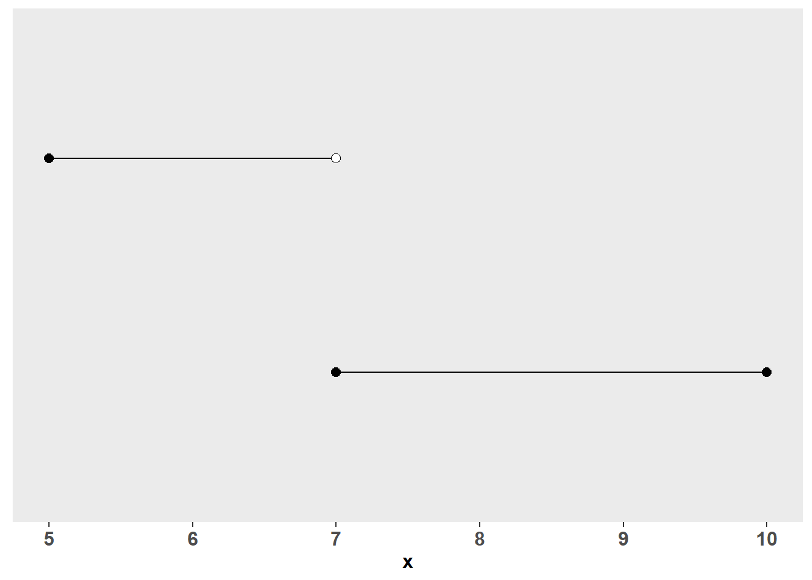
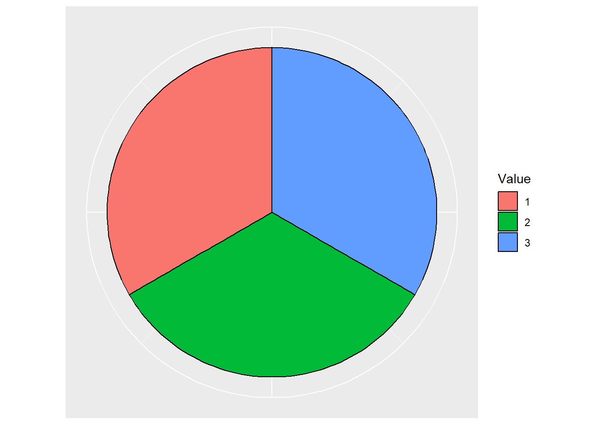

Chapter 1 Set Theory and Probability
In the course of research, behavioral scientists will often take samples of human behavior, e.g. a survey of a group of people, measurements of reaction time, etc. These samples will take some outcome, and most of us understand and have observed the inherent randomness of this act. That is to say, you might take the exact same sample in a carefully controlled circumstance and get different results every time.
Statisticians often refer to an analogous circumstance when talking about probability. Suppose we are able to describe all the possible outcomes of our sampling procedure. We take samples over and over again in the same circumstances, and each time the outcome may change. This is referred to as a random experiment. In order to familiarize you with some introductory concepts around probability, we’re going to start in this context of a random experiment. First, we’ll learn about sets and set theory in order to describe our sample space. This will also be useful in describing the form that outcomes of a random experiment may take. Then we’ll more concretely define the randomness of our experiment by talking about probability - the quantification of randomness.
1.1 Sets and Sample Spaces
Before we get into it, we aren’t going to learn set theory in it’s entirety. That would be overly (and hilariously) ambitious. What we are going to learn will make understanding later sections easier, get your brain warmed up, and make it a bit easier to understand set notation in other circumstances. The first step in conducting a random experiment is clearly defining all the possible outcomes of your sampling procedure. This is referred to as the sample space. Suppose we have five different possible outcomes in our sample space: A, B, C, D, and E. Let’s call this sample space \(S\). Then we would describe it like this:
\[ S = \{A, B, C, D, E\} \tag{1.1} \] That is to say we’ll describe the set \(S\) with curly braces, and on the inside of the curly braces, there shall be a list of distinct elements of our set. The sample space above is an example of a discrete sample space - meaning it either contains a finite number of elements or it is countable. In this case, the sample space has a finite number of elements (five to be exact), so we can call it discrete.
Describing and identifying a discrete sample space that is countable but infinite (has an infinite number of elements) is much more difficult. My hope is you can gain a small sense for it from my explanation here. We’ll see examples of it later, so it’s worth a brief consideration. Specifically, a discrete sample space can also contain an infinite number of elements - so long as those elements can be lined up one-to-one with the natural numbers (e.g. 1, 2, 3, 4, …). That is, the elements can be “counted”, albeit infinitely and forever. This is probably not the most intuitive definition for people who don’t think about mathematics every day (it certainly wasn’t for me). In a more reachable sense, a discrete sample space has elements with nothing in between them. In \(S\) above, there is nothing in between A and B, for example. If your discrete set had an infinite number of elements, you could order them by some criteria and line them up with the natural numbers. After this alignment, you could find nothing between the first and second elements (or any given sequential pair for that matter). You could just keep counting without worrying that you missed something.
In addition to the discrete sample spaces above, we may also find ourselves sampling from a continuous sample space, e.g., all the values between and including 0 and 1 (e.g \(0 \leq x \leq 1\)). Since you can’t enumerate all the values of a continuous sample space as we did with \(S\) (people have “tried”; we’ll talk about one such example later), we use a different form of notation. Suppose we have a continuous sample space \(R\), then we would specify it as
\[ R = \{x\, | \, 0 \leq x \leq 1 \} \tag{1.2} \]
The inclusion criteria for the set is written after the \(|\) in the curly braces. The \(|\) can be read loosely as meaning “where”, so reading the whole thing in the curly braces left to right you get x where \(0 \leq x \leq 1\). Therefore, our set is all the \(x\)’s from 0 to 1. Note that I will occasionally drop the \(x\) and \(|\) when it is clear what variable I am referencing. As an aside, continuous sample spaces can be found everywhere in the field of behavioral statistics. For reasons that will become apparent later, we shall nonetheless approach these spaces with slightly less mathematical depth.
That said, it is time to turn our attention towards the outcome of our random experiment. Suppose we are randomly drawing a single item from our sample space \(S = \{A, B, C, D, E\}\). The outcome of our experiment is a single item from our sample space, and we will talk about outcomes in terms of events. Events are described by a subset of distinct elements from the sample space. That is, they may be one or more outcomes combined. For example, we might say the event is \(C = \{A, B, C\}\), and if our outcome lands in the that subset (as either A, B, or C), then we shall say the event “occurred”. For the sake of brevity, and positivity, I will referred to the occurrence of an event as a “success” (congratulations all around!). You can indicate a set is a subset by:
\[ C \subset S \tag{1.3} \]
In this case, we are saying \(C\) is a subset of \(S\). We might also, for example say that our event is a single element/outcome \(C_1 = \{A\}\) or the entire sample space \(C_2 = \{A,B,C,D,E\}\). We can be as creative as we would like to be, so long as the event is in our sample space.
Indeed, in practice we might want to get a little more creative in terms of the outcomes of our random experiment. Let’s talk about a slightly more complicated scenario.
Example 1.1 Suppose we have two events \(C_1 = \{A,B,C\}\) and \(C_2 = \{B,C,D\}\), and we are interested in whether or not our outcome lands in \(C_1\) or \(C_2\). It’s helpful here to consider the circumstances where we this event would occur. Namely, If the instantiation of our outcome was an A, B, C, or D, then we would be successful (success!). That is to say, we’ve taken all the unique outcomes of either set and combined them into a new set. If our outcome lands in that new subset, we can be confident that \(C_1\) or \(C_2\) occurred. There’s a handy symbol that indicates this operation:
\[ C_1 \cup C_2 = \{A,B,C\}\:\cup\:\{B,C,D\} = \{A,B,C,D\} \tag{1.4} \]
This union operator (\(\cup\)) takes the unique elements of both sets and puts them into a set of their own. In this circumstance it is used synonymously with or. If the event of interest is our outcome landing in \(C_1\) OR \(C_2\), then we would be successful if the event landed in the union of the two sets, e.g., all the unique elements from both sets.
Example 1.2 Here’s another example, suppose we are interested in if our outcome falls into \(C_1 = \{A\}\) or \(C_2 = \{B\}\). Then our event would occur if the element was A or B:
\[ \{A\}\:\cup\:\{B\} = \{A,B\} \] Our random experiment would be successful if our outcome was A OR B.
Indeed, the union operator helps us figure out the conditions for success when we are interested in the occurrence of one event OR another. Let us now turn our attention to another equally important operator.
Example 1.3 Suppose we have our two previously described events - \(C_1 = \{A,B,C\}\) and \(C_2 = \{B,C,D\}\) - each a subset of \(S\). Lets further say that we are interested in whether or not both events occur as a result of our random experiment. That is, we shall be successful if our outcome falls in both \(C_1\) AND \(C_2\). We are therefore interested in the shared elements of our two events. Specifically, just by eyeballing the sets above, B and C are shared by the two events \(C_1\) and \(C_2\), but if we were unfortunate enough to draw a D or an A, game over. The intersect operator will help us signify this process:
\[ C_1 \cap C_2 = \{A,B,C\} \cap \{B,C,D\} = \{B,C\} \tag{1.5}\]
Unlike \(\cup\), the intersect operator represents and. It tells us the conditions for success if we would like both events to occur (a.k.a., our outcome landing in both events). This operator can create some interesting conundrums, so it’s worthwhile to do another example or two.
Example 1.4 This time let’s define our events to be \(C_1 = \{A,B\}\) and \(C_2 = \{C,D\}\). Now we’re interested in whether or not our outcome falls in \(C_1\) and \(C_2\) (What do you think is going to happen here?):
\[ C_1 \cap C_2 = \{A, B\} \cap \{C, D\} = \{\} \]
Well, you may have guessed it: Our two sets had no overlap. You couldn’t possibly draw a single element that landed in both the sets, because the sets share no elements. As a result, we get a very special set - a null set - \(\{\}\) - which is a set with zero elements. In this circumstance, when the intersect of sets results in a null set (a.k.a. they have no overlap), we shall refer to them as being mutually exclusive - because the two sets do not share elements. In terms of probability, mutually exclusive sets can be much easier to work with. We’ll talk about this soon.
Now you have some understanding of the two main set operators we’ll need - the union (\(\cup\)) and the intersect (\(\cap\)). We shall need to know a little bit more about the null set, so let’s take a slightly deeper look.
Example 1.5 It’s interesting to see how a null set works with other sets that have elements. For example:
\[ \{A,B,C,D,E\} \cap \{\} = \{\} \]
A set with elements intersected with a null set is a null set. A set with something in it can share nothing with a set that has no elements at all. This is very similar to multiplying an integer by zero. In fact, when you first start writing set notation, you might be inclined to use arithmetic operators with sets, e.g., \(\{A,B,C\} - \{A,B\} = \{C\}\) as opposed to \(\{A,B,C\} \cap \{A,B\} = \{C\}\). The null set and intersect gives us a handy way to multiply a set by zero without using \(\times\) or 0.
What do you suppose happens when we union a null set with something else? Let’s try it out:
\[ \{A,B,C,D,E\} \cup \{\} = \{A,B,C,D,E\} \]
A set unioned with a null set is itself. A null set has nothing unique to add to our “something set”. Although the null set is really cool (in my opinion; and I hope your opinion too), working with it is, metaphorically speaking, like talking to the most boring person in the world. You have nothing in common with them (\(\cap\)), and they have nothing to add (\(\cup\)). And, with that, you have learned your first set theory insult.
Up to this point, we’ve learned how to describe our sample space, the concept of an outcome and event, how to create new events with union/intersect (or/and) operators, and the fancy null set. That’s about all we need. I would like to finish out this brief section on sets with a discussion of the complement of a subset and a brief treatment of how the previously mentioned operators work in the continuous case.
The complement of a subset describes all the elements of a sample space not in that subset. For the sake of consistency, we’ll keep using our sample space \(S\) (1.1), and let’s work with \(Y = \{A,B,C\}\), \(Y\subset S\). The complement of that subset in the sample space would be \(\{D, E\}\). The operation of taking the complement of a subset is indicated by:
\[ Y^c = \{A,B,C\}^c = \{D,E\} \tag{1.6}\]
The complement allows for a wider breadth of operations.
Example 1.6 Let’s again consider our sample space \(S\). Suppose we were interested in an event that was NOT in the two subsets \(C_1 = \{A,B\}\) or \(C_2 =\{C,D\}\). The first thing we would do in this circumstance is maybe consider all the ways our outcome could be unsuccessful (we won’t use “fail” here; too negative). It would be unsuccessful if it landed in \(C_1\) or \(C_2\). Recall that the \(\cup\) (union) gives us the unique elements in both sets. Let’s take these two sets and union them into a set \(X\) together.
\[ C_1 \cup C_2 = \{A,B,C,D\} = X \]
Now that we have our subset of unsuccessful elements, we just take the complement of that:
\[ X^c = \{E\} \]
Of course, you might have known the answer to this all along, but it’s nice to see the steps broken down exactly. You could have written it all in one go using parentheses to specify order of operations, e.g.:
\[ (C_1 \cup C_2)^c = \{A, B, C, D\}^c = \{E\} \]
Notice how we do the operation in the parentheses before taking the complement.
Example 1.7 Let’s try one more example with \(C_1\) and \(C_2\). Let’s say we defined a successful outcome as all the things NOT in \(C_1\) and \(C_2\). Notice the key word “and”. Our list of unsuccessful items will be different this time because we are referring to the shared (intersect) of both our subsets. Therefore:
\[ (C_1 \cap C_2)^c = \{\}^c = \{A,B,C,D,E\} \]
The two sets have no overlap, so their intersect is a null set, and the complement of the null set is all the elements in our sample space.
With a good understanding of some of the basic operators and sets, let’s turn to a brief treatment of the continuous sample space. The continuous case is very similar to the discrete case - although it takes some drawing of number lines if you are rusty with inequalities (no problem).
Example 1.8 Suppose we are sampling from a sample space \(S = \{x\,|\,0 \leq x \leq 10 \}\) and we are interested in if the outcome lands in \(C_1 = \{x\,|\,0 \leq x \leq 2 \}\) OR \(C_2 = \{x\,|\,2 \leq x \leq 5 \}\). A successful outcome here would occur if our realized element landed anywhere from zero to five. In other words:
\[ \{0 \leq x \leq 2 \}\:\cup\:\{2 \leq x \leq 5\} = \{0 \leq x \leq 5\} \]
Let’s keep the same continuous sample space and subsets as above, and this time let’s look at the intersect of the two sets:
\[ \{0 \leq x \leq 2 \}\:\cap\:\{2 \leq x \leq 5\} = \{2\} \]
The two sets only overlap at exactly \(x = 2\), so their intersect is just a set with the value 2. Let’s do a couple more so you can get a sense for it.
Example 1.9 Suppose we have a sample space \(Q = \{x\,|\, 5 \leq x \leq 10\}\) and define \(C \subset Q\) where \(C = \{x\,|\, 5 \leq x < 7\}\). That is to say, \(C\) is a subset of Q, and its interval includes the lower side (5) but it doesn’t include the upper side (7). What is the complement of \(C\)?
\[ C^c = \{5 \leq x < 7\}^c = \{7 \leq x \leq 10\} \]
The complement includes 7 up to 10. In the plot below, you can see a visual depiction of this. The top line represents the subset \(C\), and the bottom line represents the complement. The open circle at the end of our subset \(C\) indicates that the value 7 is not included in its range. The elements of C are strictly less than 7. This is in contrast to the complement line below - which has a solid black dot indicating 7’s inclusion due to its exclusion from \(C\). Thus the complement of \(C\) ranges from 7 to 10.

Example 1.10 One more comment is worth a mention with regards to continuous sample spaces. Suppose we have two subsets of our space \(Q\) that don’t overlap in any way. For example, take \(C_1 = \{x\,|\, 5 \leq x < 7\}\) and \(C_2 = \{x\,|\, 9 \leq x \leq 10\}\). Then you would simply write their union as:
\[ \{\, 5 \leq x < 7\} \cup \{\, 9 \leq x \leq 10\}\] There is no simplified way to write this in set notation. Note the intersect of these two sets would be \(\{\}\) - a null set.
1.1.1 Repeated Samples
The previous introduction to sets was dedicated to a random experiment where we only draw a single element from our sample space. In practice, researchers and statisticians are often sampling/conducting a random experiment repeatedly. In this section we’ll talk about how to describe the sample space of an experiment that involves multiple draws. Note, for the purposes of our learning, we shall only be discussing sampling with replacement. That is, we will be talking about circumstances where the 1st, 2nd, 3rd, … , nth outcome gets returned to the sample space prior to the next draw. This is opposed to the circumstance where an outcome of a single sample reduces the size of the sample space each time. For example, suppose we have a sample space, \(S = \{A,B,C\}\). On our first experiment, we randomly draw an \(A\). In sampling without replacement, the sampling space for the next draw would be \(\{B,C\}\) (or \(\{A\}^c)\) and in sampling with replacement \(A\) would be returned to the space.
To understand how to describe the sample spaces mentioned above, we’ll turn to a good-old-fashioned coin toss (the mainstay of every introductory probability book). Suppose we perform a single flip (experiment) from a fair coin. Our sample space would be \(S = \{H, T\}\) where \(H\) is “heads”, and \(T\) is “tails”. Now let’s suppose we flip two counts. The sample space would be all the possible permutations of heads and tails from the two flips. It helps to draw draw a tree diagram to get the gist of it.

You can follow the branches of the tree above to see each possible permutation of the two flips. For example, suppose the first flip was heads, you would follow the line at the first node (on the left) up the the “H” (heads) node. Then at the “heads” node, the next flip could either be an “H” (heads) or a “T” (tails), corresponding to the top and second from the top nodes on the right. Going down each branch, top-to-bottom, we get all the possible permutations of our two flips - \(\{HH,HT,TH,TT\}\). Our random experiment is now a selection from this new sample space.
Drawing a tree to determine all the permutations of multiple draws, could get quite cumbersome, so it’s convenient to have a formula. In the example above, the first flip could take 2 outcomes. The second flip would then result in two additional branches for each of the outcomes of the first flip. In other words, we have \(2 \times 2 = 4\) possible permutations for the two coins. Had we flipped a third coin, each of nodes for the second flip would then be accompanied by two branches per node, so the calculation would be \(2 \times 2 \times 2 = 8\) permutations. Indeed, given a sample space that has \(N\) total elements/outcomes and \(k\) repeated samples, all the possible permutations would be given by:
\[ N^k \tag{1.7}\]
Note: If we had sampled from several sample spaces, all with a different number of elements, then then we would just multiply the respective element lengths together.
I will end this section with an important discussion on notation. As you can see from (1.7), the sample space can grow quite rapidly. For example, four coin flips would have a sample space of 16 elements. Consider the two coin sample space - \(\{HH,HT,TH,TT\}\). The event of getting a head on the first flip can be described by all the coin flip combinations with heads on the first flip - \(\{HH,HT\}\). If our random experiment and outcome fell into this subset, we would indeed have flipped a heads on the first coin. Now consider a circumstance where the sample space is much larger (e.g. 10 coins), it would become quickly untenable to write out all the possible permutations. Instead in some circumstances I may use some short hand like or similar to \(\{H \: on \: 1st \: flip\}\), because I don’t have the rest of my natural born life to list permutations (and you don’t have the rest of your natural born life to read them). Rest assured that these are exactly equivalent, and they shall be associated with the exact same probabilities. Indeed, sometimes the short hand will make it more clear as to what probability we are referring to.
1.2 What is probability?
Many of us have an internal sense of this stuff we call probability. In the crisp fall of the California foothills (which is about the time that I’m writing this section), you can ask a local of Placerville how often the apple orchards get overwhelmed with tourists. More often than not, they will give you some percentage of the time, and this time of the year that percentage will undoubtedly be 100%. You might ask a Sacramento resident how confident they are in their local basketball team winning, and indeed, they may also provide you with something close to a percentage of time (my guess is 15%). The two preceding scenarios are examples of the relative frequency approach to probability. In this approach, you can think of probability in the random experiment sense. That is, if we did a random experiment over and over again, we might expect some event to occur a percentage of the time. We shall call this percentage a probability. Within this approach, probabilities can take values anywhere from \(0\leq x\leq1\). Indeed a “percentage of time” greater than 1 or less than zero would be nonsensical.
In the last section we discussed how we might describe sample spaces, outcomes, and events of random experiments. In this section we’ll assign probabilities to them, and we shall adopt the above relative frequency approach interpretation. Suppose we have some event \(C\), then the probability set operator - \(P(C)\) - takes \(C\), and based on a set of rules, returns a probability for that event. The set of rules for the assignment of probability is referred to as a probability distribution. We’ll talk about probability distributions in the next chapter, but for now we’ll just focus on probability and the probability set operator. Calculating probabilities for the continuous sample space can be tricky, so we’ll stick with the discrete case and talk about the continuous later.
Example 1.11 Consider for a moment the circumstance at the end of last section: Flipping two fair coins. If you recall, our sample space was \(S = \{HH,HT,TH,TT\}\). Suppose the probability set operator assigns a probability of 1/4 to each of the outcomes in this sample space. The probability, for example, of the event \(C = \{HH\}\) would therefore be
\[ P(C) = P(\{HH\}) = 1/4 \]
The probability set operator takes the set \(C\) and assigns to it a probability.
Within the relative frequency approach, the assigned probability of 1/4 means that over many many random experiments, we might see that about 25% of the outcomes are HH. When I have taught this to my colleagues and students, many will point out that they have flipped two fair coins a large number of times and didn’t get exactly 25% of outcomes landing HH (budding statisticians!). That is indeed possible. When I talk about “many” trials, I am referring to an exorbitantly large number of trials (e.g. infinitely large numbers of flips). Indeed, if we were to flip two truly fair coins until the end of time, a total of 1/4 of those flips would be HH.
Example 1.12 While you wrap your mind around that, let’s now turn our attention to a more informative example. We’ll stick with fair coins for now. Suppose we wanted to know the probability of getting a heads on the first flip - \(C = \{HH,HT\}\) - how does the probability set operator go about assigning probabilities to an event with more than one outcome? Well, lucky for us, there is the law of addition for probability. For two events \(A\) and \(B\) for which \(A \cap B = \{\}\) (e.g. they are mutually exclusive):
\[ P(A \cup B) = P(A) + P(B) \tag{1.8}\]
Put in plain language: The probability of our outcome landing in A or B (\(\cup\)) is equal to the probability of A plus the probability of B. This law helps calculate the probability of success if we want our outcome to land in one event OR another event. In this case, how does it apply to our single event \(C\) above? Well, recall from our earlier discussion, we said that an event contains a set of distinct elements from the sample space. Because of this, every event can just be written as a union of mutually exclusive events. In our case,
\[ C = \{HH,HT\} = \{HH\} \cup \{HT\} \]
And with this in mind, we can apply the law of addition:
\[ P(\{HH\} \cup \{HT\}) = P(\{HH\}) + P(\{HT\}) = \frac{1}{4} + \frac{1}{4} = \frac{2}{4} = \frac{1}{2} \]
Of course, in practice, you don’t have to write an event as a union of distinct events or outcomes before applying the law of addition. You can simply sum up the respective probability of each outcome in the event.
Example 1.13 For example, suppose we were interested in the probability of at least one head. In this case, a successful outcome would be HT, TH, or HH, whereas TT would be unsuccessful. Thus we are considering the probability of the event - \(C = \{HT, TH, HH\}\), and with the law of addition:
\[ P(\{HT,TH, HH\}) = \frac{1}{4} + \frac{1}{4} + \frac{1}{4} = \frac{3}{4} \tag{1.9} \]
The law of addition makes things easier in multiple ways, and it implies another (easier!) way to calculate the probability above. To see this, we shall start with a handy property of the probability set function. Namely, for some sample space \(S\):
\[ P(S) = 1 \tag{1.10}\]
In English, this means that the probability our outcome lands in the sample space is equal to 1. Of course this is true! The sample space is - by definition - the collection of all the possible outcomes of our random experiment. As I said, this property makes some computations easier.
Example 1.14 For example, suppose we are interested in the probability of getting at least one head (as above). In this case, we don’t need to go through the rigmarole of enumerating all the combinations with an H. We know there’s exactly one combination with no heads - TT - and the rest of the outcomes (the complement of TT; \(\{TT\}^c\)) have at least one H. So, let’s say that the event \(C\) contains the outcomes with at least one head, and let’s also say that \(S\) is our full sample space:
Observe that: \[ C \cup \{TT\} = S \]
Look back at the definition of our two-coin flip space, and you’ll see why I’m right about this. So then we can do this:
\[ \begin{align} P(C \cup \{TT\}) &= P(S) = 1 \\ P(C) + P(\{TT\}) &= 1 \\ P(C) + P(\{TT\}) - P(\{TT\}) &= 1 - P(\{TT\}) \\ P(C) &= 1 - P(\{TT\}) \\ P(C) &= 1 - \frac{1}{4} = \frac{3}{4} \end{align} \]
Thus, without listing out all the permutations of heads and tails for our two coins, we’ve calculated what we need. That is to say, sometimes it’s much easier to calculate the probability of the complement (in the case above TT) of our event of interest and subtract the probability from 1. More formally, to calculate the probability of some event \(C\), we could take its complement \(C^c\). Then
\[ P(C) = 1 - P(C^c) \tag{1.11} \]
Example 1.15 Let’s work in another example of this just to hammer this concept home. Let’s say we have a sample space \(S = \{0,1,2,3,4,5,6,7,8,9,10\}\), and the probability set operator assigns a probability of 1/11 to each outcome in this sample space. We want to know the probability that our draw will land in the event \(C = \{3 \leq X\}\) - an outcome of 3 or more. You might be able to do this in your head. I’m personally too lazy to write out the law of addition for \(C\), so we’ll use (1.11). First observe that
\[ C^c = \{0,1,2\}\\ P(C^c) = \frac{1}{11} + \frac{1}{11} + \frac{1}{11} = \frac{3}{11} \] And therefore
\[ \begin{align} P(C) &= 1 - P(C^c) \\ P(C) &= 1 - \frac{3}{11} \\ P(C) &= \frac{8}{11} \end{align} \] Much easier!
Okay, I have to stop the narrative now to tell you I have done a great misdeed. For the sake of simplicity I’ve left out an important part of the law of addition (I know: \(P({Hell}) > 0\)). Now it’s time for the truth, and I’ll show you what I’ve done and what we need to add.
Example 1.16 Let’s define our sample space to be \(S = \{1,2,3\}\), and suppose each outcome has a probability of 1/3. Define two events \(C_1 = \{1,2\}\) and \(C_2 = \{1,2\}\). We would like to know the probability of our outcome landing in \(C_1\) or \(C_2\). This sounds like a job for the law of addition. However, remember our current version of the law only works for mutually exclusive sets, but \(C_1 \cap C_2 = \{2\}\).
We could always get around the conundrum describe above by executing the set operation before applying the probability set operator. Then with that new set, we could calculate the probability as in (1.9), e.g., using the first law of addition I described for mutually exclusive events. For example:
Observe that \[ C_1 \cup C_2 = \{1,2\} \cup \{2,3\} = \{1,2,3\} \] And therefore the probability of \(C_1\) or \(C_2\) is
\[ P(\{1,2,3\}) = \frac{1}{3} + \frac{1}{3} + \frac{1}{3} = 1 \] You can see that works pretty well. If we want to use the law of addition, we will nevertheless need to make a small addition. Specifically, we shall have to subtract out the intersect (\(\cap\)) between our two sets. That is, given two events \(A\) and \(B\)
\[ P(A \cup B) = P(A) + P(B) - P(A \cap B) \tag{1.12} \]
This law says that if we were to simply sum the probability of each event, we would double count the overlap between sets A and B (\(\cap\)) . In the case of our example, we would double count the probability of \(C_1 \cap C_2 = {2}\) twice. If you don’t believe me, look at this. Consider \(C_1\) and \(C_2\) as defined above
\[ P(C_1) = P(\{1,2\}) = P(1) + P(2) \\ P(C_2) = P(\{2,3\}) = P(2) + P(3) \\ \]
So if we applied our first version of the law of addition, then
\[ \begin{align} P(C_1 \cup C_2) &= P(C_1) + P(C_2) \\ &= P(1) + P(2) + P(2) + P(3) \\ &= P(1) + 2P(2) + P(1) \end{align} \]
We have one too many \(P(2)\)s! Indeed, if we counted the probability of 2 twice, we would end up with a nonsensical value of 4/3 (e.g. \(1/3 + 2 \times 1/3 + 1/3\)). So let’s put it all together using the second (more complete) law of addition. Recall that we assigned a probability of 1/3 to each element in our sample space
\[ \begin{align} P(C_1 \cup C_2) &= P(C_1) + P(C_2) - P(C_1 \cap C_2) \\ P(C_1 \cup C_2) &= P(\{1,2\}) + P(\{2,3\}) - P(\{2\}) \\ P(C_1 \cup C_2) &= \frac{2}{3} + \frac{2}{3} - \frac{1}{3} = 1 \end{align} \]
Fixed!
Example 1.17 Using the full version of the law of addition helps to make clear why we can drop the last term for mutually exclusive sets (1.8). Suppose we have two mutually exclusive events \(A\) and \(B\), each a subset of some sample space \(S\). Then, because they are mutually exclusive, \(A \cap B = \{\}\). And, indeed, the probability of the null set - \(P(\{\})\) - is zero. You can’t draw nothing on a random experiment. So in the case of mutually exclusive events
\[P(A \cup B) = P(A) + P(B) - 0\]
What we just learned will serve as a nice initial step into probability. We shall close this session by further emphasizing that \(P(A \cup B)\) can be thought of as the probability that our outcome lands in A OR B. On the other hand, \(P(A \cap B)\) can be thought of as the probability our outcome is an element shared by A AND B. Indeed, although we can use our set operations and the probability set operator to calculate the ladder, there is another method that we will discuss next.
1.3 Conditional Probability and Independence
Having learned a little bit about probability and the law of addition, we will turn to a slightly more complicated topic - conditional probability. Conditional Probability describes the probability of an event as a result of the occurrence of another event. For example, suppose you are on a game show where you are supposed to select one of four doors. A prize is equally likely to be behind each door; the probability set function assigns a probability of 1/4 to each door. Right before you select a door, the host yells, “stop!”, and then it is revealed that the prize is behind doors 1, 2, or 3. That is indeed some fortuitous news! Common sense says that the probability our prize lands behind door number 4 is now zero, and we should constrain our guess to doors 1, 2, and 3. That is to say, the conditional probability our prize lands behind door 4 is zero, given the hosts announcement that the event \(C = \{door\:1,door\:2,door\:3\}\) has occurred.
As in the case above, it is often possible to intuit the conditional probability of an event. Nevertheless, we shall need a concrete formula. The conditional probability of an event can be calculated using some familiar terms
\[ \frac{P(A \cap B)}{P(B)} = P(A|B) \tag{1.13} \]
Indeed, the idea of conditional probability can be a sticking point for new learners of probability, so it’s worth doing a few examples.
Example 1.18 First, let’s define a sample space - \(S = \{1,2,3\}\) - and assign a probability of 1/3 to each outcome. Now, let’s define two events - \(C_1 = \{1\}\) and \(C_2 = \{1,2\}\). We shall endeavor to calculate \(P(C_1|C_2)\). In other words we want to know the probability of a “1” outcome in our random experiment, given the event \(C_2\) has occurred. Intuitively speaking, if we know that the outcome has landed in \(C_2 = \{1,2\}\), we may feel as if the probability of getting a 1 is increased. Indeed, the outcome of 3 is now out of the picture. Let’s not lean on our intuition though. Looking at the equation for conditional probability, we shall need two quantities for our calculation - the probability of \(C_1\) AND \(C_2\) (\(\cap\)) and the probability of \(C_2\):
The tools in the last section will prove sufficient to calculate these.
\[ P(C_1 \cap C_2) = P(\{1,2\} \cap \{1\}) = P(\{1\}) = 1/3 \\ P(C_2) = 1/3 + 1/3 = 2/3 \]
Now that we have what we need, it’s just a matter of plugging in the numbers to the conditional probability equation.
\[ \frac{P(C_1 \cap C_2)}{P(C_2)} = P(C_1|C_2)\\ \frac{1/3}{2/3} = \frac{1}{2} \]
The probability of \(C_1\) given that \(C_2\) has occurred is 1/2.
The computation isn’t too hard (although it may be at first), but the interpretation of conditional probability can certainly be tricky. It’s worth unpacking our last example a bit more. One way to envision probability is to think of a probability pie (stick with me here). In our example, the probability of each of the events was 1/3. In the pie chart below, observe how each of the individual outcomes is assigned an equivalent amount of area. That is, each gets 1/3 of the total probability.

Now, we are told that the event \(C_2 = \{1,2\}\) has occurred. Put another way, we are told that the outcome from our random experiment has landed somewhere in \(C_2\). The wedge in our pie chart corresponding to outcome 3 is removed. You can see this in the pie chart below (it’s now white). Observe that the two remaining outcomes - 1 or 2 - have an equal amount of probability assigned to them. You might intuit that, in the present circumstance, each of the two outcomes would occur about half the time. Indeed, the result of our calculation confirmed this. The conditional probability of getting a 1 - given \(C_2\) occurred - was 1/2. Thus, because \(C_2\) occurred, the probability of \(C_1\) increased from 1/3 to 1/2.

Example 1.19 Let’s take a look at an example that will give us another view of things. Suppose we flip two coins and, as in previous examples, our sample space is \(S = \{TT,TH,HT,HH\}\). Like before, our probability set operator assigns to each a probability of 1/4. In this case, what is the probability of getting a head on the second flip - given we’ve flipped a head on the first?
Recall from our previous work, and the note at the end of the section 2.1, that flipping a head on the second coin is described by the event - \(C_2 = \{TH,HH\}\). Note that here I’ve used \(C_2\) to remind you that we are referring to a head on the second flip. Getting a head on the first flip is described by \(C_1 = \{HT,HH\}\). The probability of each of these events is:
\[ P(C_1) = P(\{HT,HH\}) = 1/4 + 1/4 = 1/2 \\ P(C_2) = P(\{TH,HH\}) = 1/4 + 1/4 = 1/2 \] In order to calculate the conditional probability - \(P(C_2|C_1)\) - we shall also need \(P(C_1 \cap C_2)\) - e.g. the probability that our outcome lands in \(C_1\) AND \(C_2\).
\[ P(C_1 \cap C_2) = P(\{HT,HH\} \cap \{TH,HH\}) = P(\{HH\}) = 1/2 \] With \(P(C_1)\) and \(P(C_1 \cap C_2)\), we can now calculate \(P(C_2|C_1)\)
\[ \frac{P(C_1 \cap C_2)}{P(C_1)} = \frac{1/4}{1/2} = \frac{1}{2} \] The probability of flipping a second head, given you’ve already flipped one, is 1/2.
Indeed, we already observed that the \(P(C_2)\) (head on second flip) was 1/2, and, interestingly, \(P(C_2|C_1)\) was also equal to 1/2. Put another way, the occurrence of a head on the first flip did not change the likelihood of a head on the second flip. In terms of probability, we say these two events are independent. In a more concrete manner, given two events - A and B - with each assigned the probabilities \(P(A)\) and \(P(B)\), the two events are independent if
\[ \frac{P(A \cap B)}{P(B)} = P(A|B) = P(A) \tag{1.13} \]
The occurrence of B doesn’t change the probability of A; the probability of A occurring, given B occurred, is unchanged. As I promised at the end of the last section, independence and conditional probability give us a new way of calculating P(A B), and it’s hidden in our equations for conditional probability. Specifically
\[ \begin{align} \frac{P(A \cap B)}{P(B)} &= P(A|B) \\ P(B)\frac{P(A \cap B)}{P(B)} &= P(A|B)\,P(B) \\ P(A \cap B) &= P(A|B)\,P(B) \tag{1.14} \end{align} \] The last line above - \(P(A \cap B) = P(A|B)\,P(B)\) - is known as the law of multiplication. It gives us another way to calculate the \(P(A \cap B)\). For our purposes, this law finds it’s greatest use in the case of events that are independent. Recall from above, in the case of independent events \(P(A|B) = P(A)\), so the law of multiplication becomes
\[ P(A \cap B) = P(A)\,P(B) \tag{1.15} \] In other words, in the case of two independent events, we can calculate the probability of A and B (\(P(A \cap B)\)), by multiplying \(P(A)\) and \(P(B)\) together. Let’s give these equations some run:
Example 1.20 Suppose we are flipping three coins independently. That is, assume the event we get a heads or tails on a flip is independent from getting a heads/tails on any other flip. Let’s say \(C_1\) represents the first flip event, \(C_2\) the second, and \(C_3\) the third. Here I’m using a shorthand because writing out the sample space would be tiresome. For each coin, assign the probability of 1/2 to the event that the coin flips heads (and 1/2 that it flips tails). What is the probability of \(C_1 = \{H\}\), \(C_2 = \{H\}\), and \(C_3 = \{H\}\)? We can use the law of multiplication for independent events
\[ P(C_1)\,P(C_2)\,P(C_3)= 1/2 \times 1/2 \times 1/2 = 1/8 \] We shall get three heads about 1/8th the time. As an interesting aside, suppose you wrote out the sample space and specifically identified the events described by my shorthand for \(C_1\), \(C_2\), and \(C_3\), you’d find that the intersect of the sets is \(\{HHH\}\). I didn’t show you the exact method to determine the intersect between three sets, but you can simply do it by comparison.
You may have also noticed that I used the law of multiplication for three events - not two. Indeed, I only described the law for two independent events. However, if a set of events are mutually independent, you may multiply their probabilities together to get the probability of event 1 AND event 2 AND event 3… We won’t discuss the mathematical definition of mutual independence here. I’ll never provide you with a task in the textbook where it isn’t clear.
1.4 Extended Examples of Probability
You’ve learned a a lot about probability to this point. Great job! Probability can be a tough subject, and when I have taught people the subject, I find that students can get quite confused (albeit it could be the teacher and not the subject). It’s therefore a good idea to do some more examples. In this section, we’ll add a little bit of flourish to our examples to make probability a little bit more clear.
Example 1.21 Let’s start on the simple side. Suppose the probability that a person likes hot dogs is - \(P(\{likes\:hot\:dogs\}) = .25\) - and the probability a person likes broccoli is - \(P(\{likes\:broccoli\}) = .15\). For the sake of my sanity, let’s refer to these as events A and B, respectively. Further assume that if an individual likes broccoli, then the probability they like hot dogs is \(.10\).
- Are the events \(A\) and \(B\) independent?
- What is the probability that someone likes hot dogs AND broccoli?
- Bonus question: What is the sample space of our random experiment?
We shall deal with each in turn. First, we are given that \(P(A|B) = .10\). You may have missed this because I used less formal language (dang word problems!). This conditional probability does not equal \(P(A) = .25\). Therefore, because \(P(A|B)\neq P(A)\), the two are dependent. Put another way, if someone likes broccoli (event B occurred), it lowers the probability that they like hot dogs.
The second question refers to the law of multiplication for dependent events. Here it is again:
\[P(A \cap B) = P(A|B)\,P(B)\] We have \(P(A|B) = .10\) and \(P(B) = .15\). So, plugging these numbers in we get
\[P(A|B)\,P(B) = .10 \times .15 = .015\] The probability of liking hot dogs AND liking broccoli is just \(.015\). Out of a thousand random experiments, you might find 15 people who like broccoli and hot dogs. The actual rate is probably much higher, but we aren’t talking about real numbers just yet.
The third part of this question concerns the sample space. I used short hand to describe the sample space again, so it’s worth unpacking things for clarity. Let’s represent “liking hot dogs” with the symbol \(LH\), and “disliking hot dogs” with the symbol \(DH\). Then let’s represent “likes broccoli” with \(LB\) and “dislikes broccoli” with \(DB\). Like the outcomes of two coin flips, each event in our sample space shall represent a combination of a hot dog preference and a broccoli preference.
\[S = \{LHLB, LHDB, DHLB, DHDB\}\] And our event “liking hot dogs” would be
\[ A = \{LHLB, LHDB\} \] Our event liking broccoli would be
\[ B = \{LHLB, DHLB\} \] The event “liking broccoli” and “liking hot dogs” would be described as
\[ A \cap B = \{LHLB\} \]
And we needed independence and the law of multiplication to calculate that this has a probability of about .015. Eat your veggies!
Example 1.22 Let’s turn our attention to another classic probability example: dice! We’ll keep it relatively simple and say we are rolling two four-sided die, and assign a probability of 1/4 to each number for each die, respectively. Let’s look at some scenarios with increasing complexity.
1.What is the probability of rolling a 1 followed by a 1? 2.What is the probability of rolling a 1 and a 2? 3.What is the probability of the dice summing to 3? 4.What is the probability of getting a sum of 3 or more - given you’ve rolled a 1 on the first dice?
In the first scenario, We’ll again use a short hand to refer to the outcomes of the sample space. \(A_1\) will refer to the first roll and \(A_2\) will refer to the second roll. We have the event \(A_1 = \{1\}\) - which can also be written as the combination of all the outcomes where the first dice is 1 - \(\{1\,1,1\,2,1\,3,1\,4\}\). Both are equivalent. The second way of writing it is more exact. We also have \(A_2 = \{1\}\), and each event has \(P(A_1) = P(A_2) = 1/4\). They both have a probability of 1/4. We also know that the two events are independent. So, using the law of multiplication:
\[P(A_1 \cap A_2) = P(A_1)P(A_2) = 1/4 \times 1/4 = 1/16\] Indeed, had we picked any two numbers for the first and second dice the probability would be the same - \(1/4 \times 1/4 = 1/16\). This fact will help us with the second question above, because we now know the probability set operator will assign a probability of 1/16 to each outcome in our two roll sample space. Our two roll sample space has \(4 \times 4 = 16\) possible outcomes - so the probability has been divided equally across each outcome.
The second question asks us for the probability of rolling a 1 and a 2. In this case, we could get a 1 followed by a 2 OR a 2 followed by a 1. That is to say, we are talking about the probability of the event \(A = \{1\,2, 2\,1\}\), and using the law of addition
\[P(\{1\,2, 2\,1\}) = 1/16 + 1/16 = 2/16 = 1/8\] Our work in the last step has set us up nicely to approach the third part of the question. We shall find it useful to fully specify the sample space.
1st Die | 2nd Die | Probability |
|---|---|---|
1 | 1 | 1/16 |
1 | 2 | 1/16 |
1 | 3 | 1/16 |
1 | 4 | 1/16 |
2 | 1 | 1/16 |
2 | 2 | 1/16 |
2 | 3 | 1/16 |
2 | 4 | 1/16 |
3 | 1 | 1/16 |
3 | 2 | 1/16 |
3 | 3 | 1/16 |
3 | 4 | 1/16 |
4 | 1 | 1/16 |
4 | 2 | 1/16 |
4 | 3 | 1/16 |
4 | 4 | 1/16 |